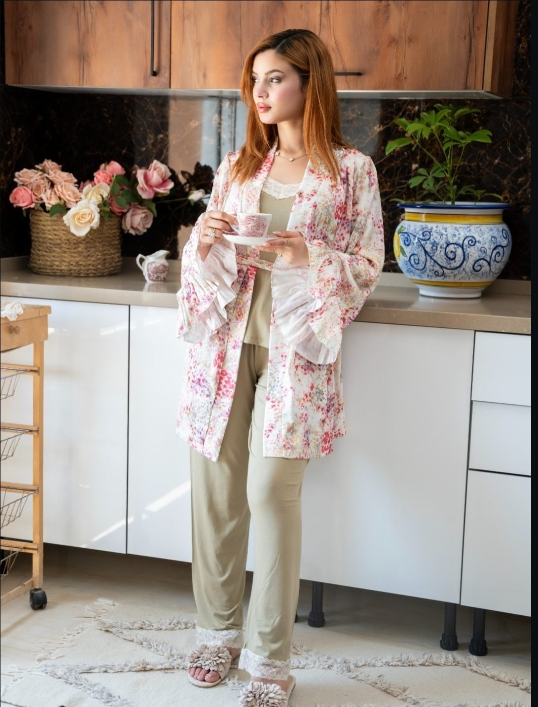
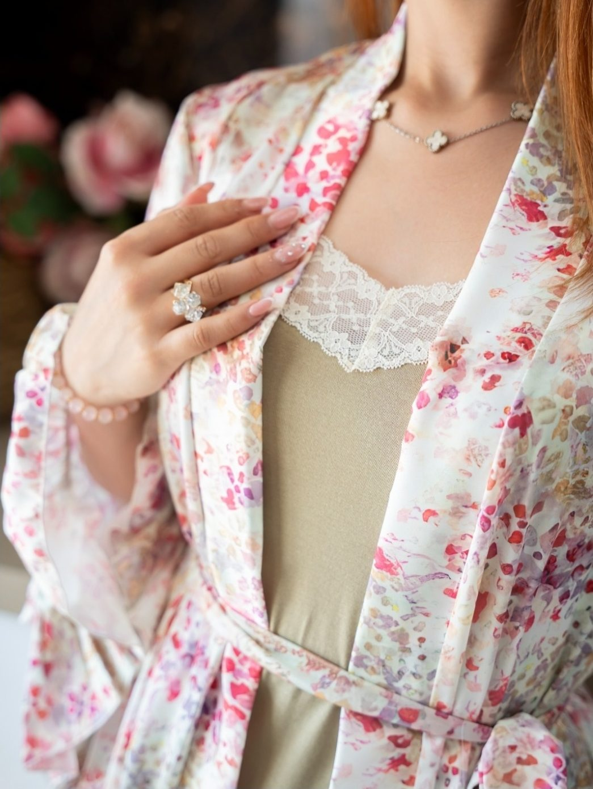

Mariage
Bien choisir sa parure de mariageLa parure de la mariée se choisit longtemps avant la robe, car elle en dessine la ligne. Nous vous guidons entre satin, dentelle et broderie pour une pièce qui vous ressemble le jour J.
Nos carnets d'atelier, depuis Monastir. Conseils pour choisir votre parure, gestes d'entretien du satin et de la dentelle, et petites histoires de la féminité que MIRACLE aime raconter, une pièce à la fois.
Mariage
Bien choisir sa parure de mariageLa parure de la mariée se choisit longtemps avant la robe, car elle en dessine la ligne. Nous vous guidons entre satin, dentelle et broderie pour une pièce qui vous ressemble le jour J.

Style
L'art du demi-mancheLe demi-manche fleuri est notre façon d'habiller les matins tranquilles avec élégance. Découvrez comment porter cette loungewear de la chambre au petit-déjeuner sans jamais renoncer au raffinement.

Entretien
Prendre soin du satin & de la dentelleUne belle pièce faite main mérite des gestes doux : lavage à la main, eau tiède et séchage à plat. Nos conseils pour garder l'éclat du satin et la finesse de la dentelle saison après saison.

Conseils
Trouver sa taille, sans se tromperLa bonne taille change tout : le maintien, le confort et la ligne de la pièce sur votre corps. Suivez notre guide de mesures pour commander sereinement, même à distance partout en Tunisie.

Style
Les teintes de la saisonBois de rose, terracotta, champagne et ivoire : notre palette s'inspire des lumières douces de Monastir. Voici comment associer ces teintes pour composer une lingerie qui vous va au teint.

Coulisses
L'écrin MIRACLE : l'art d'offrirChaque commande part de l'atelier dans un écrin cadeau offert, pensé pour prolonger l'émotion de l'ouverture. Un présent de mariée, d'anniversaire ou simplement une attention pour soi.
Nouveautés, coulisses de couture et inspirations au fil des jours. Écrivez-nous en message privé pour commander : livraison à domicile partout en Tunisie et paiement à la livraison.